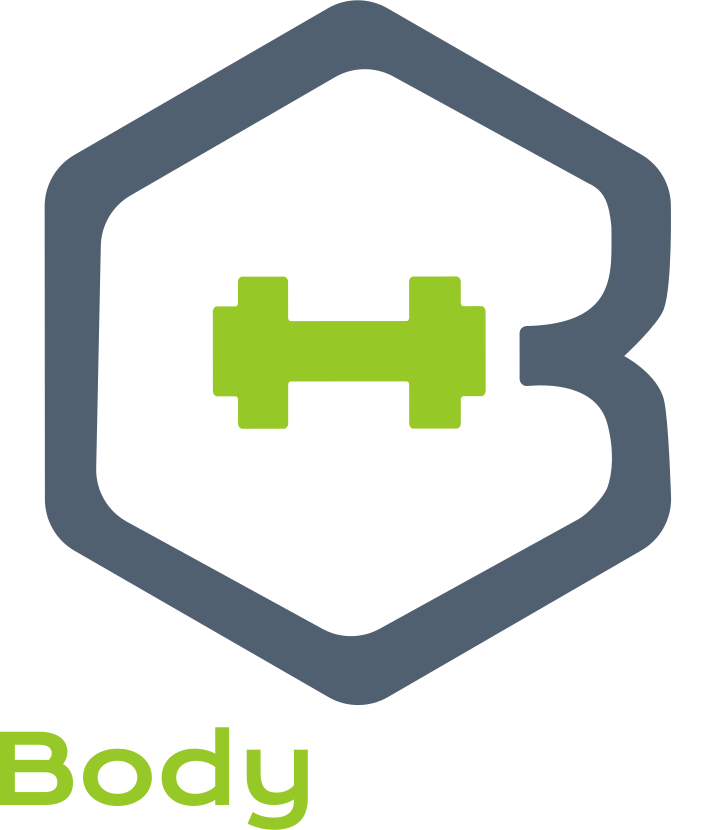
— תזונה, אימונים והתקדמות במקום אחדהאפליקציה שעוקבת אחריכם בכל צעד — תזונה, אימונים והתקדמות אישית, במקום אחד.
BodyBuddy הוא יומן תזונה, ניהול אימונים ומעקב התקדמות — הכל באפליקציה אחת. תעדו ארוחות בקלות ועקבו אחר קלוריות וערכי מאקרו — חלבון, פחמימות ושומן — בלחיצה אחת ביום. לצד זאת, בנו תוכניות אימונים אישיות המותאמות למטרות שלכם, ועקבו במדויק אחר המשקל וההתקדמות לאורך זמן, כך שתמיד תדעו בדיוק איפה אתם עומדים בדרך למטרה.
תזונה
יומן תזונה ומעקב קלוריות — חלבון, פחמימות ושומן, בכל יום.
-
היומן של היום, מסודר
כל הארוחות והמאכלים שהוספתם, לפי שעות, עם קלוריות וערכים תזונתיים לכל פריט.
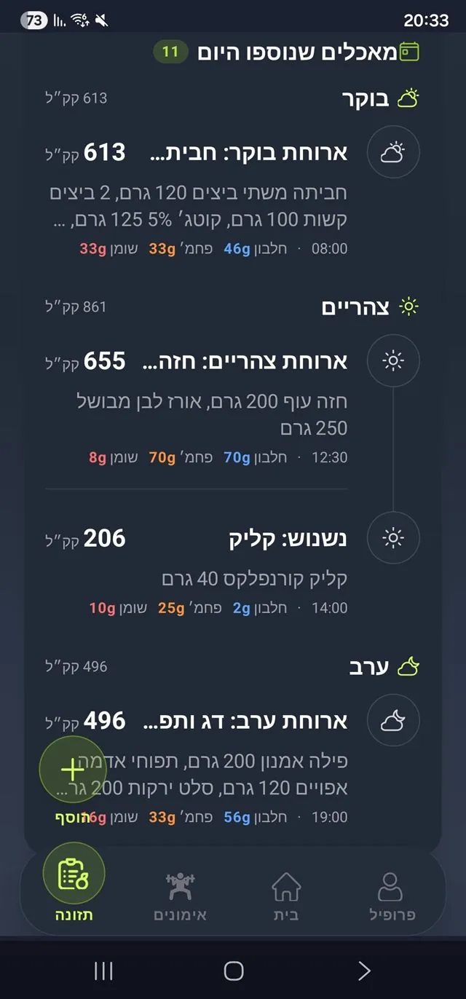
-
חיפוש מאכלים מהיר
מקלידים שם של מאכל והנתונים כבר שם. מאכלים שהשתמשתם בהם לאחרונה והצעות מהירות מחכים בהישג יד.
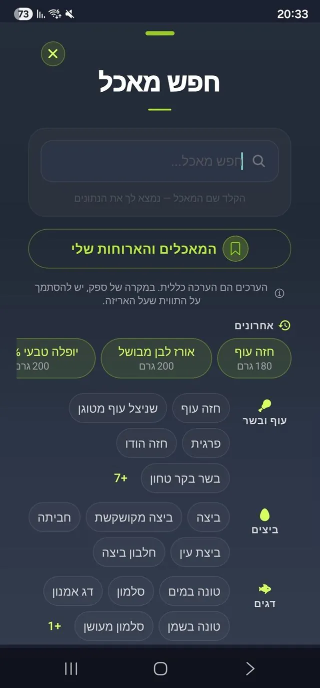
-
מצלמים, וה־AI מנתח
מצלמים את הארוחה או בוחרים תמונה מהגלריה, והאפליקציה מזהה את המרכיבים, הקלוריות והערכים התזונתיים תוך שניות. אין תמונה? אפשר פשוט לתאר את הארוחה במילים.
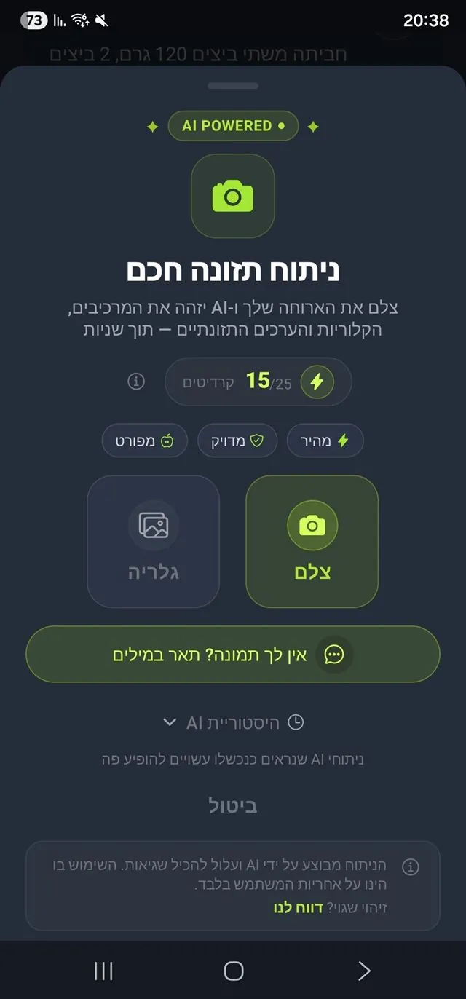
-
תמונה, תיאור, או שניהם
מוסיפים לתמונה תיאור קצר, כמו משקל המנה או כמה יחידות אכלתם, וה־AI מעריך כמויות ומרכיבים שלא רואים בתמונה. אפשר גם לשלוח תיאור בלבד, בלי תמונה בכלל.
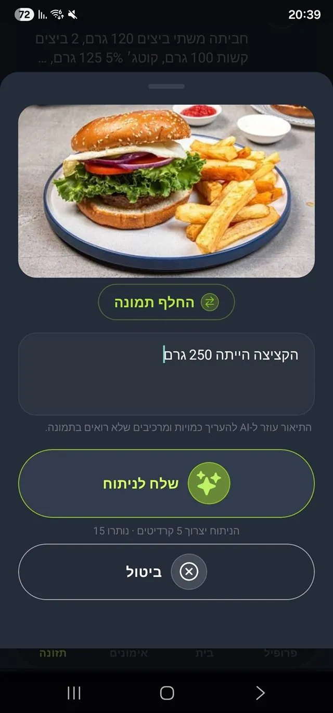
-
רואים את הסוכן עובד
שלב אחרי שלב: הבקשה מתקבלת, הסוכן מנתח את התמונה, והמרכיבים שהוא מזהה מוצגים על המסך בזמן אמת, עד שהערכים מחושבים ונשמרים.
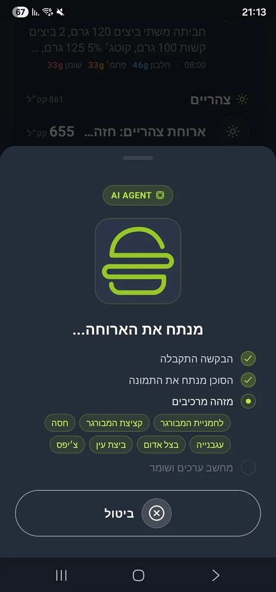
-
התוצאה, עם הסבר
הסוכן מסביר במילים מה זיהה, מה לקח מהתיאור שלכם ומה העריך בעצמו, ולצד ההסבר מופיעים הקלוריות והמאקרו של הארוחה. לכל רכיב מצוין מקור הערכים: ממאגר התזונה שלנו או לפי הערכת ה־AI. תמיד אפשר לערוך את הערכים ואת הכמויות לפני ההוספה.
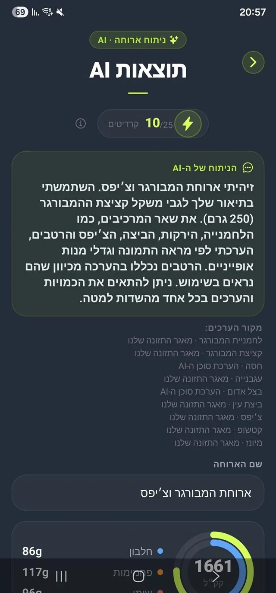
-
סקירת ארוחה לפי מרכיבים
רואים כמה קלוריות, חלבון, פחמימות ושומן יש בכל מרכיב, משנים כמויות בגרמים, ובודקים מה נשאר לכם להיום.
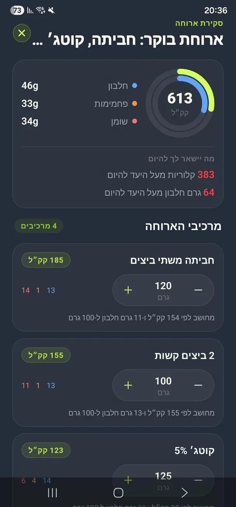
-
מול היעד היומי
גרף קלוריות וחלבון מול היעד שהגדרתם, כדי לדעת בכל רגע כמה נצרך וכמה נותר.
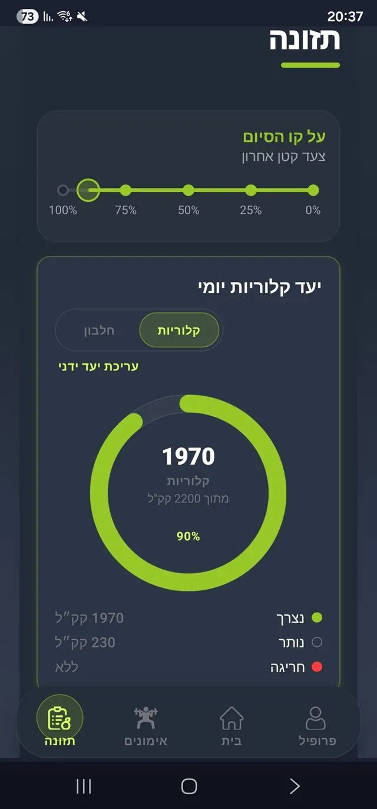
אימונים
תוכניות אימון המותאמות אישית למטרות ולרמת הכושר שלכם.
-
בוחרים אזור על הגוף
מסמנים על המודל את השרירים שרוצים לאמן, מסובבים את המודל, ועוברים ישר לתרגילים המתאימים.
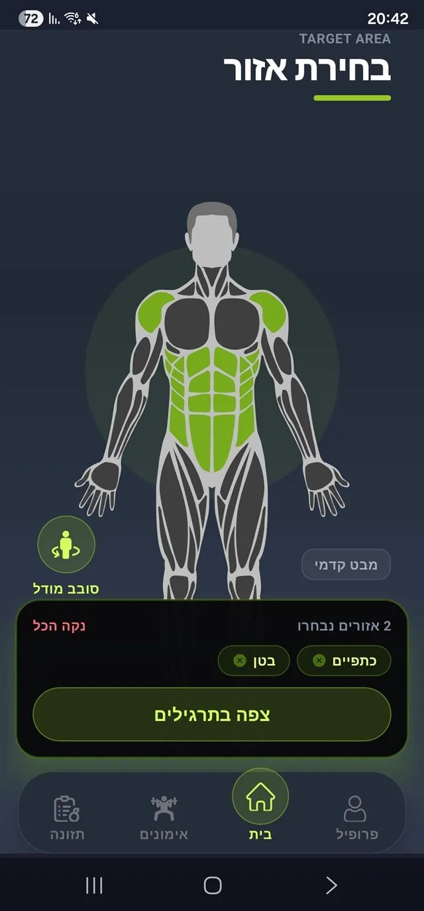
-
ספריית תרגילים
מסננים לפי אזור, מקום אימון וציוד, מחפשים תרגיל בשמו, ומסמנים מועדפים.
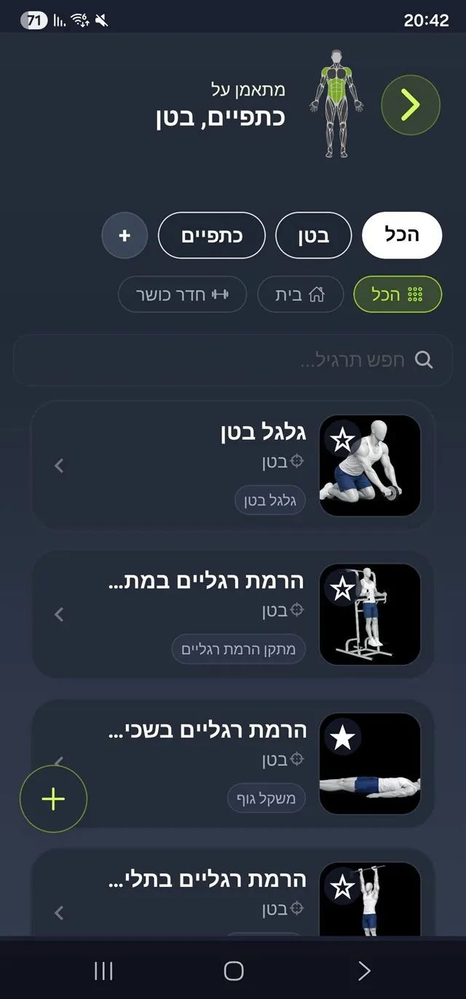
-
הסבר מלא לכל תרגיל
הדגמה, שריר עיקרי, שרירים מסייעים וציוד, הכול במקום אחד לפני שמתחילים.
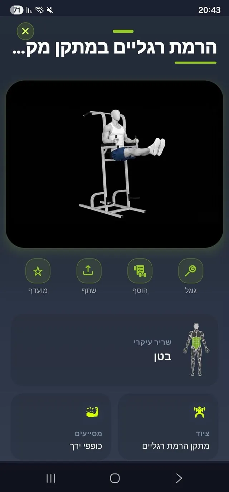
-
אימון בזמן אמת
טיימר, סטים, משקלים וזמנים. מתעדים תוך כדי האימון ומסיימים בלחיצה.
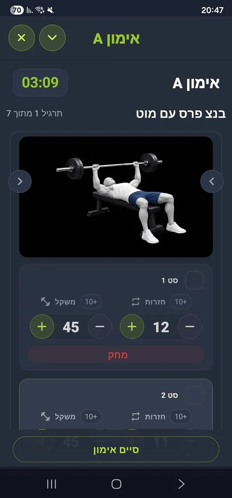
התקדמות
גרפים והיסטוריה שמראים בדיוק כמה התקדמתם בדרך למטרה שהצבתם.
-
שיאים אישיים וגרף לאורך זמן
לכל תרגיל: חזרות, משקל וסטים מקסימליים, וגרף שמראה איך השתפרתם מאימון לאימון.
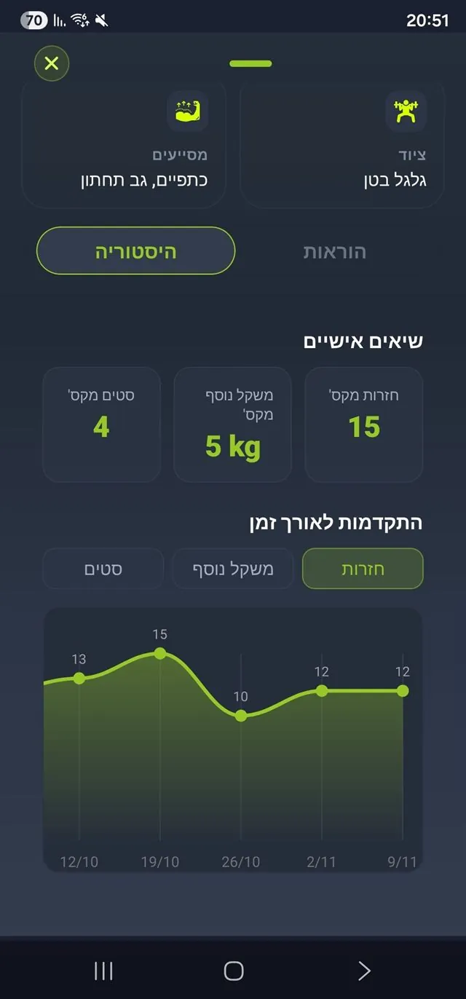
-
סיכום אימונים שבועי
כמה אימונים עשיתם השבוע, זמן פעילות, שבועות ברצף, והאם אתם עומדים ביעד.
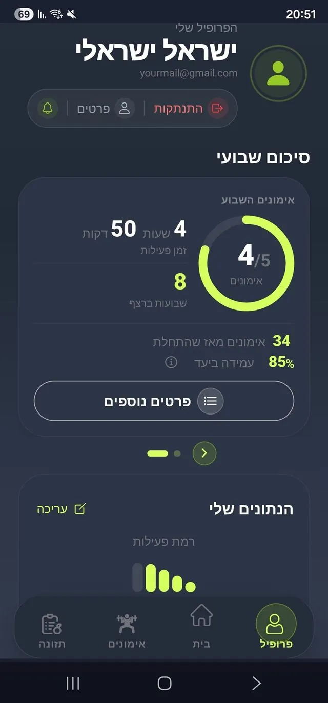
-
סיכום תזונה שבועי
באיזה ימים עמדתם ביעד הקלוריות והחלבון, ואיפה אתם היום.
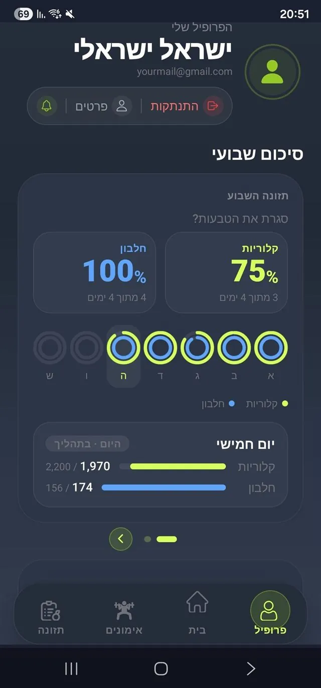
התראות ותזכורות חכמות
תזכורות לארוחות, שתייה ואימונים שעוזרות לשמור על עקביות לאורך זמן.
מדריכים
הסברים קצרים על מה שהאפליקציה מחשבת בשבילכם.
מהו TDEE ואיך מחשבים אותו?
כמה קלוריות הגוף שורף ביום, ואיך מחשבים בעזרת נוסחת מיפלין-סנט ג'אור.
כמה חלבון צריך לאכול ביום?
טווחים לפי משקל ומטרה, דוגמת חישוב ומקורות חלבון.
מאקרו: חלבון, פחמימות ושומן
כמה קלוריות יש בכל גרם, ואיך מחלקים את הקלוריות היומיות.
איך סופרים קלוריות? מדריך למתחילים
קביעת יעד, תיעוד ארוחות וטעויות נפוצות.
תוכנית אימונים למתחילים
שלושה אימוני גוף מלא בשבוע: תרגילים, סטים, חזרות ומנוחה.
שאלות נפוצות
מה זה BodyBuddy?
BodyBuddy היא אפליקציית כושר ותזונה במקום אחד: יומן תזונה עם קלוריות ומאקרו, תוכניות אימון ומעקב התקדמות.
האם האפליקציה בחינם?
כן, אפשר להוריד ולהשתמש בה בחינם.
באילו מכשירים היא זמינה?
כרגע באנדרואיד, ב־Google Play. גרסה ל־iPhone בדרך.
איך עובד ניתוח הארוחות בעזרת AI?
מצלמים את הארוחה או מתארים אותה במילים, והאפליקציה מזהה את המרכיבים ומעריכה קלוריות וערכים תזונתיים. תמיד אפשר לערוך את הערכים לפני השמירה.
עד כמה הערכים מדויקים?
הם הערכה. לכל רכיב מצוין אם הערך מגיע ממאגר התזונה או מהערכת ה־AI, ואפשר לתקן אותו ידנית.
האם צריך להירשם?
כן, ההרשמה חובה והיא בחינם. החשבון שומר את הנתונים שלכם ומאפשר להגיע אליהם גם ממכשיר אחר.
מה קורה לנתונים שלי?
הנתונים האישיים לא נמכרים ולא משמשים לפרסום. הפירוט המלא במדיניות הפרטיות, ואפשר למחוק את החשבון.
מה אפשר לעשות בחלק האימונים?
לבחור שרירים על מודל גוף, לעיין בספריית תרגילים עם הדגמה, לתעד אימון עם טיימר, סטים ומשקלים, ולראות שיאים וגרפים של ההתקדמות.
האם האפליקציה מחליפה רופא או דיאטן?
לא. המידע כללי ואינו ייעוץ רפואי. עם מצב רפואי, בהריון או עם רקע של הפרעת אכילה, כדאי להתייעץ עם איש מקצוע.
איך יוצרים קשר או מדווחים על בעיה?
במייל bodybuddysupport@gmail.com.
קחו את BodyBuddy איתכם
זמינה עכשיו להורדה חינמית. תתחילו לעקוב אחרי התזונה והאימונים שלכם עוד היום.